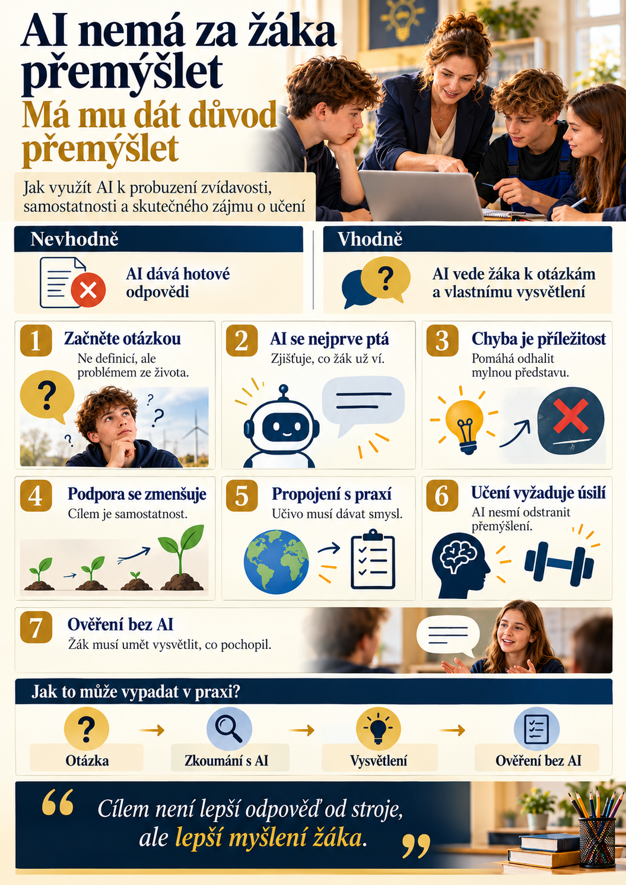

Představme si dvě hodiny elektrotechniky.
V první učitel oznámí: „Dnes budeme probírat elektrické jištění.“ Následuje výklad, zápis do sešitu a několik kontrolních otázek.
Ve druhé začne otázkou: „Proč doma někdy vypadne jistič, když zapneme několik spotřebičů najednou? A co by se mohlo stát, kdyby jistič nefungoval?“
Obě hodiny mohou dospět ke stejným znalostem. Ta druhá však nabízí něco navíc: důvod, proč se o téma zajímat.
A právě zde může učiteli pomoci umělá inteligence.
Ne tím, že připraví barevnější prezentaci nebo napíše odpovědi za žáky. Ale tím, že pomůže vytvářet otázky, situace a činnosti, které žáky přivedou k vlastnímu přemýšlení.
1. Začněme otázkou, ne definicí
Tradiční výuka často postupuje od vysvětlení k procvičení. Tento postup má své místo a v mnoha situacích je nezastupitelný.
Někdy však můžeme pořadí obrátit.
Nejprve představíme problém, který žáci dokážou pochopit, ale zatím ho neumějí vysvětlit. Teprve potom společně hledáme potřebné znalosti.
AI může učiteli během přípravy nabídnout několik takových úvodních situací.
Příklady z různých předmětů:
- Elektrotechnika: Proč má ochranný vodič jinou funkci než pracovní vodič?
- Angličtina: Jak si objednat jídlo v zahraničí, když neznám přesný název pokrmu?
- Občanská nauka: Co by se změnilo, kdyby vláda mohla sama rozhodovat i o vině a trestu?
- Dějepis: Jak bychom ověřili, že historická fotografie skutečně zachycuje událost, kterou má dokumentovat?
Cílem není pouze vzbudit pozornost. Dobrá úvodní otázka musí souviset s tím, co se mají žáci naučit.
Zajímavost bez vzdělávacího cíle se totiž snadno změní v pouhou zábavu.
2. AI jako průvodce, který se nejprve ptá
Představme si žáka, který nerozumí fungování transformátoru.
Otevře AI a napíše: „Vysvětli mi transformátor.“
Běžný chatbot mu může okamžitě poskytnout rozsáhlou odpověď. Žák si ji přečte, možná zkopíruje do sešitu, ale nemusí jí skutečně porozumět.
Co kdyby však AI postupovala jinak?
Nejdříve by se zeptala, co už žák ví o elektromagnetické indukci. Podle odpovědi by zvolila další otázku, jednoduché přirovnání nebo názorný příklad.
Po každém kroku by ověřila, zda žák rozumí.
Zásadní rozdíl je v tom, že AI nepřebírá myšlení žáka. Pomáhá mu uspořádat vlastní myšlenky.
Takový způsob práce vychází z principů průběžného poskytování podpory a metakognice – schopnosti přemýšlet o vlastním učení.
Učitel přitom zůstává odpovědný za správnost výkladu, volbu obtížnosti i ověřování výsledků.
3. Chyba nemusí znamenat neúspěch
Žák odpoví nesprávně.
V běžné výuce může následovat oprava, známka nebo přechod k další otázce.
Jenže chybná odpověď může být pro učitele cennou informací. Ukazuje, čemu žák nerozumí nebo jak o problému přemýšlí.
AI může pomoci připravit doplňující otázky, které žáka navedou k odhalení vlastní chyby.
Například při procvičování angličtiny žák řekne:
He go to school every day.
Místo okamžitého sdělení správného tvaru může AI položit otázku:
Look at the subject. Is it I, you, he, she or they? What happens to the verb in the present simple?
Žák tak dostává příležitost chybu sám opravit.
Tento postup není vhodný za všech okolností. Začátečník někdy potřebuje přímé vysvětlení a názorný příklad. Neustálé hádání správné odpovědi by ho mohlo spíše frustrovat.
Důležité je, aby pomoc odpovídala jeho aktuálním znalostem.
4. Každý žák potřebuje jinou míru podpory
Ve stejné třídě mohou sedět žáci, kteří látku pochopí po prvním vysvětlení, i ti, kteří potřebují více času a opakování.
AI nabízí možnost připravit několik úrovní podpory pro stejný vzdělávací cíl.
Například při výuce elektrických obvodů může učitel vytvořit:
- jednoduché vysvětlení základních pojmů,
- názorný obrázek s popisky,
- postupně řešený příklad,
- samostatný úkol bez nápovědy,
- náročnější problém pro žáky, kteří postup zvládli.
Nejde o rozdělování dětí na údajné vizuální, sluchové nebo jiné pevně dané typy žáků. Takové pojetí učebních stylů nemá dostatečnou vědeckou oporu.
Smyslem je reagovat na konkrétní obtíže a znalosti, nikoliv na nálepky.
A ještě důležitější je jedna věc: podpora by se měla postupně zmenšovat. Žák se potřebuje naučit pracovat i bez ní.
5. Propojujme učivo se skutečným životem
Zvláště v odborném vzdělávání má tento princip mimořádný význam.
Žák učebního oboru nepotřebuje vědět jen to, jak zní definice. Potřebuje rozumět tomu, proč je určitá znalost důležitá pro jeho budoucí práci.
Umělá inteligence může pomáhat vytvářet modelové situace z praxe.
Například budoucí elektrikář může řešit otázku, jaké informace potřebuje znát před návrhem elektrického obvodu.
Žák angličtiny si může nacvičit rozhovor se zákazníkem, který popisuje technický problém.
V občanské nauce mohou žáci porovnávat argumenty různých účastníků modelové společenské diskuse.
AI zde funguje jako prostředek k vytvoření prostředí, ve kterém se učivo používá.
To ale neznamená, že digitální simulace může nahradit skutečnou odbornou praxi. V technických oborech musí být praktické postupy odborně ověřené a bezpečné. Chatbot není autoritou pro práci na elektrickém zařízení.
6. Ne všechno musí být zábavné
Zde je potřeba upozornit na časté nedorozumění.
Moderní výuka bývá někdy prezentována jako nekonečná řada her, kvízů, videí a digitálních aktivit.
Jenže učení vyžaduje také úsilí.
Žáci se potřebují učit soustředit, zapamatovat si základní informace, opakovat, procvičovat a překonávat obtíže.
AI může udělat některé činnosti přístupnějšími. Neměla by však odstranit veškerou námahu, která je se skutečným učením spojena.
Ostatně i zpráva OECD Digital Education Outlook 2026 upozorňuje, že kvalitnější výstupy vytvořené s AI automaticky neznamenají lepší osvojení znalostí.
Dobře navržená výuka proto kombinuje zajímavé podněty s požadavkem na samostatnou práci.
7. Nejdůležitější okamžik přichází po vypnutí AI
Žák dokončí úkol s pomocí chatbota.
Jak poznáme, co se skutečně naučil?
Jednoduše: dáme mu příležitost předvést znalosti bez digitálního pomocníka.
Může vlastními slovy vysvětlit princip, vyřešit podobný problém, obhájit postup nebo odpovědět na několik otázek bez nápovědy.
Takové ověřování nemusí pokaždé znamenat známku.
Může jít o krátký rozhovor, výstupní lístek na konci hodiny nebo praktickou ukázku.
Rozhodující není jen hotová odpověď, ale také schopnost vysvětlit, jak k ní žák dospěl.
A právě zde zůstává role učitele nezastupitelná.


Praktická ukázka: 25 minut výuky s AI
Předmět: Elektrotechnika
Téma: Elektrické jištění
Cíl: Žák vlastními slovy vysvětlí, k čemu slouží jistič a proč je důležité chránit elektrické vedení před nadproudem.
1. Problém ze života – 3 minuty
Učitel představí situaci: „V domácnosti se po zapnutí několika spotřebičů vypnul jistič. Proč se to mohlo stát?“
2. Vlastní hypotézy – 5 minut
Žáci navrhnou vysvětlení. Učitel jejich odpovědi zaznamená, ale zatím neposkytuje úplné řešení.
3. Práce s AI – 7 minut
Žáci pomocí řízených otázek prozkoumají souvislost mezi elektrickým proudem, zatížením obvodu a funkcí jističe. Použijí pouze učitelem ověřené zadání a podklady.
4. Vysvětlení spolužákovi – 5 minut
Ve dvojicích si vysvětlí, co zjistili. Učitel opraví případné nepřesnosti a doplní odborný výklad.
5. Ověření bez AI – 5 minut
Každý žák samostatně odpoví na tři krátké otázky. Učitel získá přehled o skutečném porozumění a rozhodne, zda je potřeba další procvičení.
Celou aktivitu lze realizovat také s jediným počítačem a projekcí. Není nutné, aby měl každý žák vlastní telefon nebo účet u poskytovatele AI.
Tři prompty, které může učitel ihned vyzkoušet
Probuď zvídavost
Připravuji hodinu na téma [TÉMA] pro žáky [ROČNÍK A OBOR]. Navrhni pět zajímavých úvodních otázek nebo problémových situací ze skutečného života. Každá musí souviset s konkrétním vzdělávacím cílem. Nepoužívej samoúčelné hry. U každé otázky uveď, jaké znalosti žáci potřebují k jejímu vysvětlení a jakou mylnou představu může odhalit.
Buď průvodcem, ne strojem na odpovědi
Jsi trpělivý výukový průvodce středoškolského žáka. Pomáhej mi porozumět tématu [TÉMA]. Nejprve zjisti, co už vím. Pokládej vždy jen jednu otázku a počkej na odpověď. Neposkytuj hned celé řešení. Pokud si nevím rady, nabídni přiměřenou nápovědu nebo krátké vysvětlení. Neudržuj mě zbytečně v nejistotě. Průběžně ověřuj, zda rozumím. Na závěr mi polož tři otázky bez nápovědy. Neuděluj mi známku.
Ověř skutečné porozumění
K tématu [TÉMA] vytvoř tři úlohy pro samostatné ověření znalostí. První ověří základní porozumění, druhá použití znalostí v nové situaci a třetí schopnost vysvětlit vlastní postup. Připrav také správná řešení a jednoduchá kritéria hodnocení pro učitele. Žák má tyto úlohy řešit bez AI.
Co si musí učitel pohlídat
Nadšení pro nové technologie nesmí zastínit jejich omezení.
Umělá inteligence může vytvářet věrohodně působící chyby. Nezná spolehlivě skutečné schopnosti konkrétního žáka a nemůže sama rozhodovat o jeho vzdělávacích potřebách.
Učitel by proto měl dodržovat několik zásad:
- Ověřovat odbornou správnost materiálů, zejména u technických a bezpečnostních témat.
- Nevkládat do veřejných AI nástrojů identifikovatelné údaje o žácích ani informace o jejich zdravotním stavu či podpůrných opatřeních.
- Respektovat věkové podmínky služeb a pravidla školy.
- Nepoužívat výstupy AI jako jediný podklad pro klasifikaci.
- Zachovat možnost rovnocenného učení i bez AI.
Zavedení AI do výuky má smysl pouze tehdy, pokud přináší konkrétní vzdělávací přínos.
Závěr: Technologie může pomoci. Zájem musí vzniknout u žáka.
Žádný chatbot nedokáže sám vytvořit dobrou výuku.
Může učiteli ušetřit čas při přípravě, navrhnout zajímavé otázky, připravit různé úrovně procvičování a poskytnout žákovi další příležitost k vysvětlení učiva.
Nedokáže však nahradit vztah mezi učitelem a žákem, pedagogický úsudek ani skutečnou zkušenost s překonáváním obtíží.
Nejdůležitější otázka proto nezní: „Kolik AI nástrojů jsme dnes použili?“
Zní: „Co dnes žák pochopil, co předtím nechápal, a dokáže to vysvětlit i bez AI?“
Protože cílem vzdělávání není vychovat člověka, který umí získat odpověď od stroje.
Cílem je vychovat člověka, který dokáže přemýšlet, klást dobré otázky a hledat odpovědi i sám.